NISQ Analyzer User Guide
The NISQ Analyzer is a research prototype based on the work by Salm et. al.
It automatically analyzes implementations of quantum algorithms.
The results indicate if a quantum algorithm can be executed on a Quantum Processing Unit (QPU) or simulator, see below.
It also enables the analysis and selection of suitable QPUs based on a specific quantum algorithm implementation, see below.
Furthermore, it enables the automated comparison of available quantum compilers to support the selection of the most suitable compiled quantum circuit, see below.
An overview about the NISQ Analyzer and its used components can be viewed in the Home Section.
SDKs, QPUs, and Cloud Services
QC Atlas' Software Platforms get mapped to SDKs.
This mapping happens automatically when opening a Software Platform in the UI.
QPUs are automatically retrieved by QProv a provenance system for quantum computing.
Cloud Services are required to run the Implementation and QPU Selection.
Currently, only real quantum computers of the cloud service IBMQ are supported.
Implementations
Implementations in QC Atlas are mapped to Implementations in the NISQ Analyzer DB.
Again, this mapping happens automatically when opening an Implementation in the UI.
Implementation properties specific to the NISQ Analyzer are inside the Selection Criteria tab.
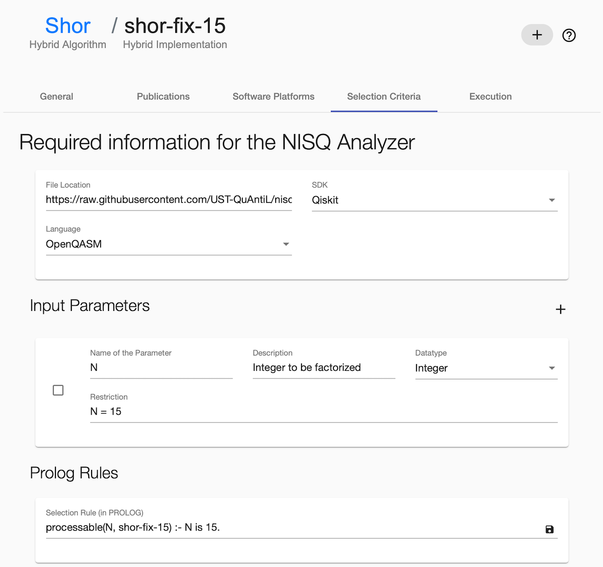
Define the File Location as URL where the raw implementation is placed.
Select the previously added Software Platform and select the Language of the implementation.
To add new input parameters press the + button on the right side of Input Parameters. Afterwards, insert the necessary data into the fields of the created Input Parameter.
To delete an Input Parameter, select the card on the left side and press the - button on the right, next to the heading Input Parameters.
Prolog Rules, e.g. Selection Rule can be changed as well. Make sure that the rules follow correct Prolog Syntax.
To save all changes press the round button on the right side.
Note
Input Parameters and Selection Rule are only required for the Implementation and QPU Selection.
Note
To support the insertion of various input parameters, the source code of the defined general implementation requires a get_circuit method, see example. Further, such general implementations are currently not supported by the automated compiler comparison. Therefore, concrete circuits are required, see example.
Prerequisites
- The cloud service
IBMQexists - The software platform of the implementation exists
- The algorithm contains at least one implementation
Running the NISQ Analyzer for Implementation and QPU Selection
The UI can be found at the NISQ Analyzer tab in the algorithm page.
Overview of Analysis Jobs
Initially, an overview about previous analysis jobs is given.
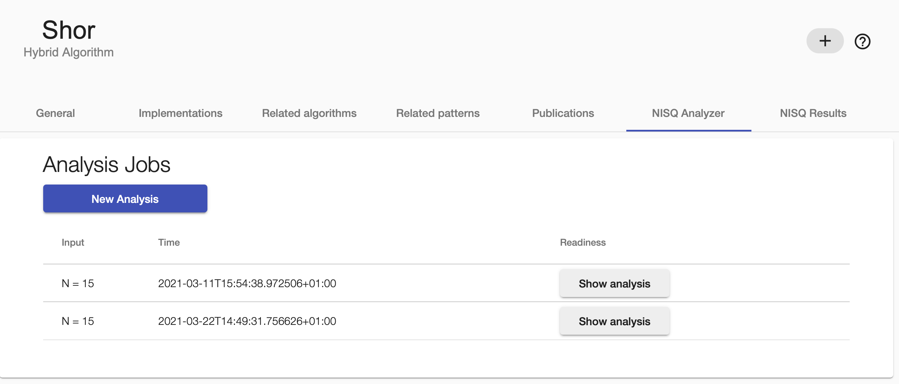
New Analysis
To start a new analysis, click the New Analysis button.
Then, specify the input values. Afterwards, select IBMQ in the dropdown menu and insert your Qiskit token for authentication purposes of the IBMQ service.
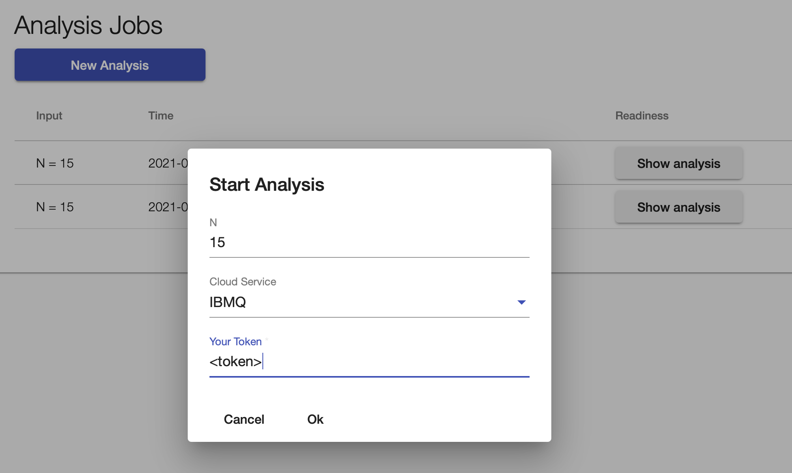
If the analysis is finished, a Show analysis button appears, that can be clicked to see more details.
Analysis Result
After clicking Show analysis, all results of the specific analysis are shown.
Furthermore, the current queue sizes of the suitable simulators and QPUs are shown.
Press the button Execute to run the selected QPU/implementation combination.
All analysis results are stored and can also be viewed on the NISQ Results tab.
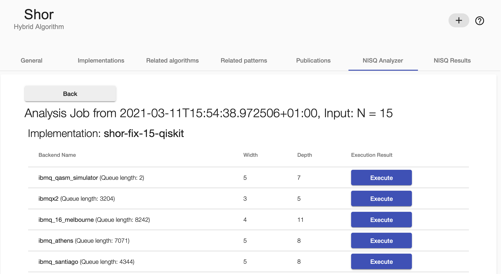
Execution Result
By clicking Show result the result of the executed input/QPU/implementation tuple is shown.
Keep in mind that the execution itself can take quite long time.
All execution results are stored and can also be reviewed on the NISQ Results tab.
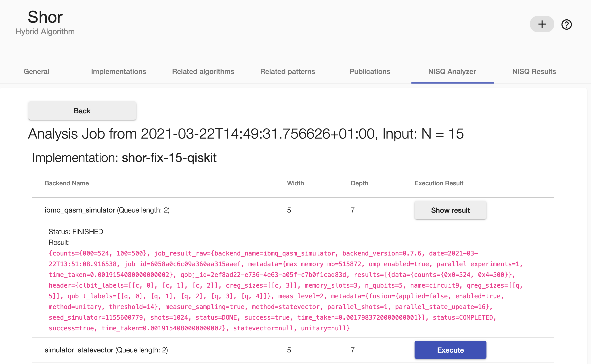
Historical data about Implementation and QPU Selection
Previous analysis and execution results can be found on the NISQ Results tab.
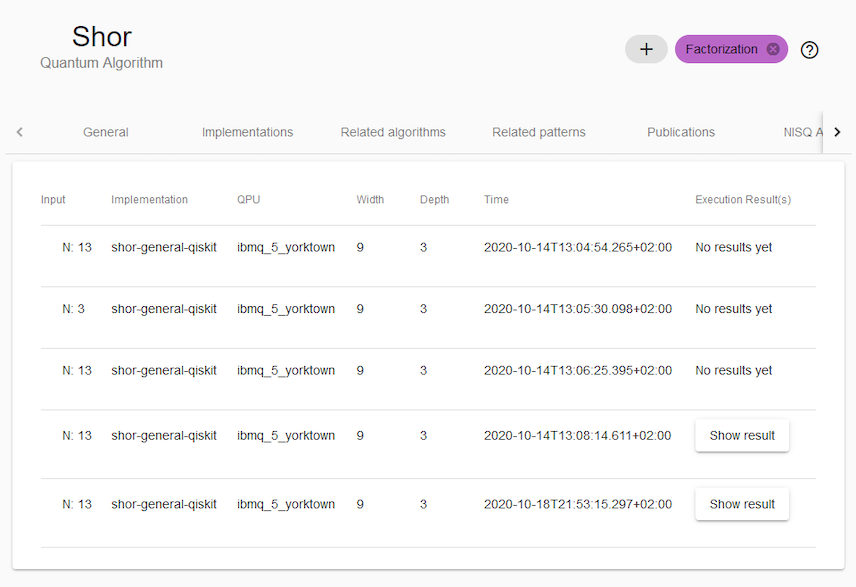
If the respective analysis result has been executed, the outcome of said execution can be viewed as well.
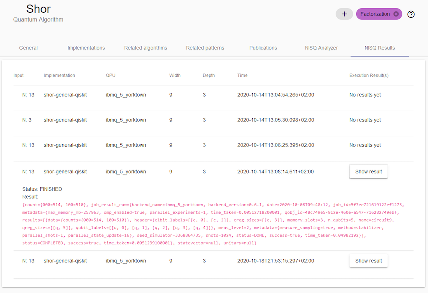
Running the NISQ Analyzer for QPU Selection
The UI can be found at the NISQ Analyzer tab in context of the implementation page.
Overview of Analysis Jobs
Initially, an overview about previous analysis jobs for the specific implementation is given.
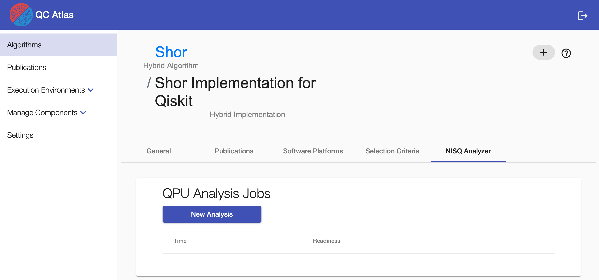
New Analysis
To start a new analysis, click the New Analysis button.
Then, select IBMQ and insert your Qiskit token for authentication purposes of the IBMQ service.
You can also select if simulators should be included in the analysis.
Analysis Result
The analysis job is finished if the Show analysis button occurs on the right side.
When clicking on it, suitable QPUs (and simulators) are listed.
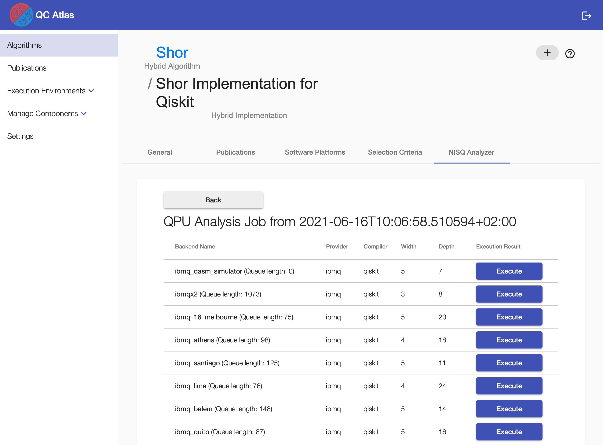
Press the button Execute to run the implementation on the selected QPU.
Execution Result
By clicking Show result the result of the executed implementation on the selected QPU is shown.
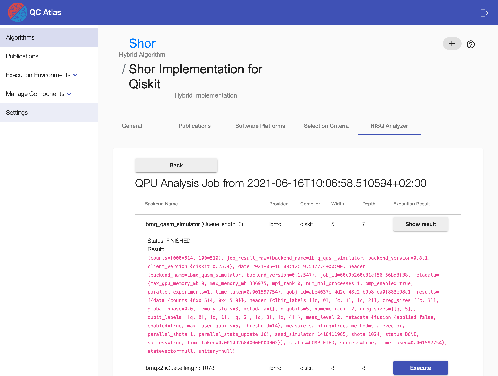
Running the NISQ Analyzer for Compiler Comparison
The UI can be found at the Execution tab in the implementation page (next to Selection Crietia).
A video demonstrating the compiler comparison process can be found here.
Currently, the quantum compilers t|ket>, Quilc, and Qiskit Transpiler are supported wrapped by Compilation & Execution Services pytket-service, forest-service, and qiskit-service.
To support quantum compilers not supporting the initial programming language of the given quantum circuit, the backend of the Circuit Transformer is used to translate the circuit into the required language.
The Execution tab shows previous compilation results and enables the further compilations and executions of the given implementation.
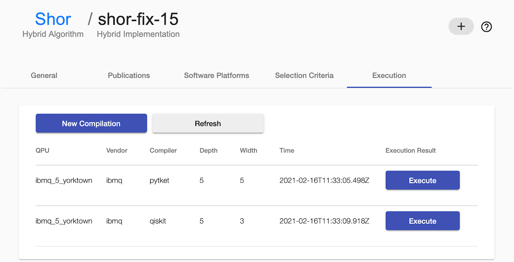
Start new Compilation
To start a new compilation, click the New Compilation button and insert the vendor name, qpu name, and your token.
Note
Currently, only real quantum computers of IBMQ are supported, thus, in this case, your IBMQ token is required.
For using the simulator of Forest (e.g. QPU = 9q-qvm), insert anything else as token.
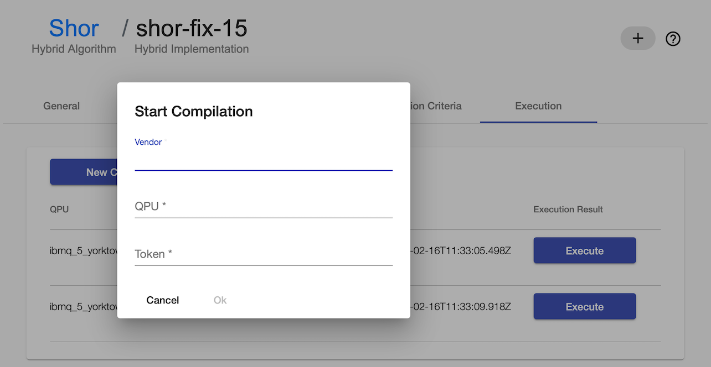
Click Refresh a few times until the new compilation results are presented.
Execute a Compiled Circuit
Click the Execute button of the desired compilation result to start the execution.
Click the Refresh button to see the Show result button on the chosen compilation result and click on it to display the execution result.
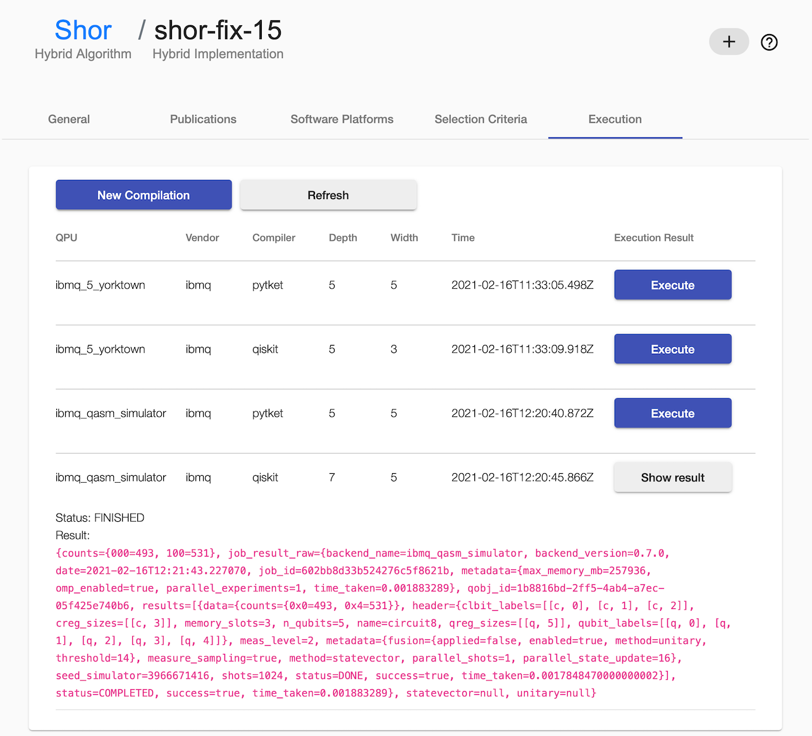